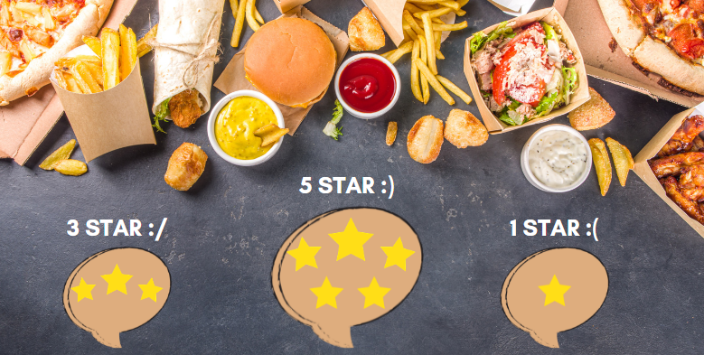

This SQL project analyzes Walmart's sales data to identify top-performing products, assess customer behavior, and uncover sales trends.
By exploring factors like product lines, payment methods, and customer demographics, the project aims to provide actionable insights to optimize
sales strategies and improve business performance.

This project aims to analyze airline flight data and provide key insights into ticket pricing trends, airline revenues, and other operational metrics using an interactive
Power BI dashboard. The Flight Analysis Dashboard helps users, such as airline managers, revenue analysts, and travelers, to explore various aspects of
airline performance and flight pricing, offering a comprehensive overview of critical KPIs.
Diversity and Inclusion Dashboard project is designed to analyze and visualize workforce demographics, performance ratings,
promotions, and turnover rates, focusing on gender diversity within the organization. The dashboard provides a comprehensive view of the
company's diversity-related metrics, helping HR professionals and leadership teams make informed decisions to foster an inclusive work environment.
This project visualizes various dimensions of employee attrition to help HR teams and management identify patterns and potential causes of employee departures.
By analyzing key metrics such as department-wise attrition, demographics, tenure, promotions, salary hikes, and external factors like commute
time and business travel, the dashboard offers actionable insights into the organization’s workforce dynamics.

This project focuses on identifying and recommending star restaurants using data analytics, visualized through an interactive dashboard.
By leveraging various metrics like customer ratings, cuisine types, price range, and service offerings, this dashboard helps users and
restaurant owners make informed decisions about dining choices and business improvements.
The main goal of this project is to identify high-value customers based on their behavior and transaction history. These high-value customers
contribute significantly to a company's revenue and are often prioritized for retention and marketing efforts.

In this project, we aim to develop a Python-based recommendation system for identifying and recommending the star restaurants.
This system will analyze user preferences and restaurant data to suggest top-rated dining spots based on various factors such as cuisine type, and location.

This project aims to analyze the sales data of a food business to uncover valuable insights related to sales performance,
product preferences, and customer behavior using Excel. By leveraging data analytics, we can identify trends and patterns
that will help improve business strategies and maximize revenue.